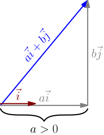
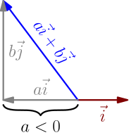
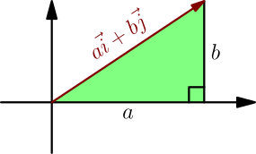
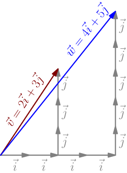

i's with i's, j's with j's¶
Let's figure out how to calculate any dot product like $(a\I+b\J) \cdot (x\I+y\J)$. Notice that the projection of any vector $a\I+b\J$ onto $\I$ is $a$.

This also works if $a$ is negative, because then the projection is also negative.

The dot product $(a\I+b\J) \cdot \I$ is the projection $a$ multiplied by the length of $\I$, which is $1$, and multiplying by $1$ does nothing. This leads to $$ (a\I+b\J) \cdot \I = a. $$ With projections, we derived the formula $$ \vec v \cdot (\vec w \, r) = (\vec v \cdot \vec w) r, $$ which works with any vectors $\vec v, \vec w$ and any number $r$. Applying that here gives $$ (a\I+b\J) \cdot (x\I) = (a\I+b\J) \cdot (\I \, x) = \underbrace{\Bigl( (a\I+b\J) \cdot \I \Bigr)}_a x = ax. $$ By doing a very similar calculation with $\J$ instead of $\I$, we see that $$ (a\I+b\J) \cdot (y\J) = by. $$ Let's calculate $(a\I+b\J) \cdot (x\I+y\J)$, where on the right side, we don't have just $x\I$ or $y\J$, but their sum. With projections, we got $$ (\vec a + \vec b) \cdot \vec c = \vec a \cdot \vec c + \vec b \cdot \vec c \qquad \text{for all vectors $\vec a, \vec b, \vec c$}, $$ and with angle between vectors, we got $$ \vec v \cdot \vec w = \vec w \cdot \vec v \qquad \text{for all vectors $\vec v, \vec w$}. $$ The first result says that if we have a dot product with vectors added on the left side, then it can be expanded, just like the product of numbers. The second formula says that order doesn't matter with dot product. By combining these, we see that if we have a dot product with vectors added on the right side, then that can also be expanded, just like the product of numbers, $$ \vec c \cdot (\vec a + \vec b) = \vec c \cdot \vec a + \vec c \cdot \vec b \qquad \text{for all vectors $\vec a, \vec b, \vec c$.} $$ Applying this gives $$ (a\I + b\J) \cdot (x\I+y\J) = \underbrace{(a\I + b\J) \cdot (x\I)}_{ax} + \underbrace{(a\I + b\J) \cdot (y\J)}_{by}. $$
For all vectors $a\I+b\J$ and $x\I+y\J$, we have $$ (a\I+b\J) \cdot (x\I+y\J) = ax+by. $$
I like to call this "$\I$'s with $\I$'s, $\J$'s with $\J$'s", or "iwi jwj" for short.
This is yet another way to think about the dot product. I'm sorry about the above wall of math with lots of formulas and only a couple pictures, but that's mostly the nature of this result; it's something that we can calculate easily, not something that we can visualize easily. The true power is in using this result together with all the visual things that we know about dot product, which is what we'll do next.
Vector length formula¶
We find a formula to calculate the length of any vector $\vec v$. As a reminder, here are two ways to see why $\vec v \cdot \vec v = |\vec v|^2$:
- With angle between vectors: The angle between $\vec v$ and $\vec v$ (that is, the angle between the vector and itself) is zero, so $\vec v \cdot \vec v = \abs{\vec v} \abs{\vec v} \cos(0)$, where $\cos(0) = 1$.
- With projection: The projection of $\vec v$ onto itself is $\abs{\vec v}$. The dot product is that multiplied by the length of the vector being projected onto, which is also $\abs{\vec v}$.
Combining this with the "$\I$'s with $\I$'s, $\J$'s with $\J$'s" rule gives $$ |a\I+b\J|^2 = (a\I+b\J)\cdot(a\I+b\J) = aa+bb = a^2+b^2. $$ We can now take the square root on both sides.
The length of any 2D vector $a\I+b\J$ is $\sqrt{a^2+b^2}$.
The Pythagorean theorem is a special case of this. Any triangle with a 90 degree angle can be rotated and moved so that it sits on the $x$ axis with a tip at origin, like this:

By the vector length formula, the length of the longest side is $\sqrt{a^2+b^2}$, where $a$ and $b$ are the sides that are perpendicular to each other. The length of the longest side is often called $c$, and the result is written like this:
In a trigangle with a 90-degree angle and side lengths $a,b,c$, where $c$ is the longest side (opposite to the 90-degree angle), we have $$ a^2+b^2=c^2. $$ This is known as the Pythagorean theorem.
Example: Calculating projection¶
Let's calculate some things with $\vec v = 2\I+3\J$ and $\vec w = 4\I+5\J$. Their dot product is $$ 2 \cdot 4 + 3 \cdot 5 = 8 + 15 = 23, $$ and by the vector length formula (derived above), their lengths are $$ \abs{\vec v} = \sqrt{2^2+3^2} = \sqrt{13} \quad \text{and} \quad \abs{\vec w} = \sqrt{4^2+5^2} = \sqrt{41}. $$
Let $p$ be the projection of $\vec v$ onto $\vec w$. Then, with projection stuff, we get $$ \vec v \cdot \vec w = p\abs{\vec w}, $$ so $$ p = \frac{\vec v \cdot \vec w}{\abs{\vec w}} = \frac{23}{\sqrt{41}}. $$
Example: Calculating angle between vectors¶
Let $\vec v$ and $\vec w$ be as above, and let $\theta$ be the angle between them. Then, with angle stuff, we get $$ \vec v \cdot \vec w = \abs{\vec v} \abs{\vec w} \cos(\theta), $$ which leads to $$ \cos(\theta) = \frac{\vec v \cdot \vec w}{\abs{\vec v} \abs{\vec w}} = \frac{23}{\sqrt{13}\sqrt{41}}. $$ To find $\theta$ from here, use a button named $\arccos$, $\text{acos}$ or $\cos^{-1}$ on your calculator: $$ \theta = \arccos\left( \frac{23}{\sqrt{13}\sqrt{41}} \right) \approx 4.9697^\circ $$ That's a small angle; we all know how much 45 degrees is, and this is about 10 times smaller than that.
